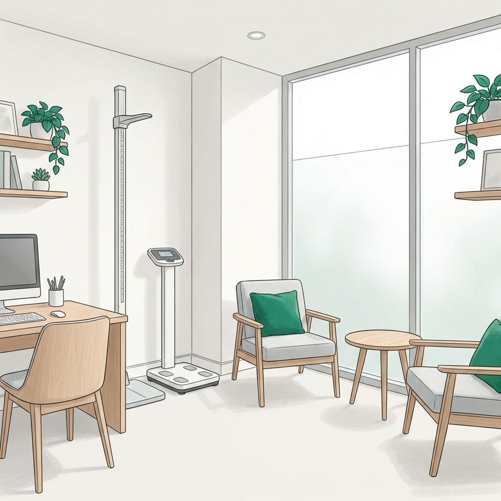

Nutrición con Rigor Clínico en Benito Juárez
Nuestra sede central en la Colonia Del Valle es el centro de excelencia para pacientes que buscan un manejo profesional y humano en el centro-sur de la CDMX.
Ubicados en Pilares 405, Entrada por Casa Ferro, estamos a minutos de colonias como Nápoles, Narvarte, Mixcoac e Insurgentes. En Clínica Denki, nos enorgullece ser parte activa de la vida saludable de nuestros vecinos, ofreciendo soluciones clínicas para desafíos complejos de salud.
Bajo la dirección de la Dra. Lucy Camberos, nuestro consultorio está diseñado para brindar una experiencia de paz, profesionalismo y resultados medibles desde la primera sesión.
Atención Preferente en tu Alcaldía
Cercanía y calidad médica a tu alcance.
Proximidad y Rigor
Consulta clínica de alta especialidad a minutos de tu hogar en Nápoles, Narvarte o Mixcoac.
Atención Geriátrica
Soporte especializado para el adulto mayor en la zona, asegurando independencia y vitalidad.
¿Por qué elegir Clínica Denki en la Del Valle?
Somos vecinos comprometidos con la ciencia de la alimentación real.
Enfoque Clínico: Cada diagnóstico en Benito Juárez se respalda con tecnología de bioimpedancia y análisis clínico profundo.

"Vivo en la Narvarte y encontrar a la Dra. Lucy fue una bendición. Mi diabetes está por fin bajo control y el consultorio me queda a diez minutos."
— Jorge P., Paciente de Benito Juárez
Agenda tu Cita en la Del Valle
Accede a la mejor nutrición clínica sin salir de tu zona. Estamos listos para acompañarte.
Pilares 405, Entrada por Casa Ferro, Del Valle Centro, Benito Juárez